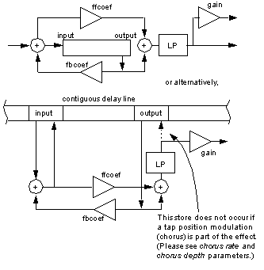
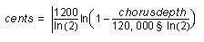
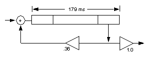
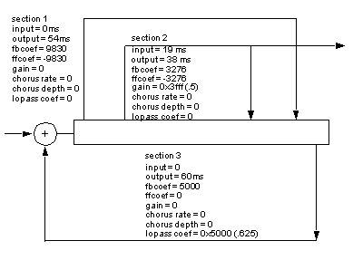

|
|
The Synthesis Driver
The Synthesis Driver is the Audio Library object used by the Sound Player, the Sequence Player, and application-specific players to create Audio Command Lists, which are passed to the Audio Microcode. This section defines various API calls which can be used by application programmers who want to create their own Players.
Programmers who use the Sequence Player and Sound Player need only be familiar with the initialization of the driver, the alAudioFrame() function that creates audio Command Lists, and the mechanism by which the Synthesis Driver satisfies the need for sound data.
Initializing the Driver
Note: The alInit() call will call alSynNew().
The configuration also specifies a callback procedure pointer of type ALDMANew, which is used by the synthesis driver initialization procedure to set up callbacks for sound data requests. The procedure specified in the configuration structure is called once during initialization for every physical voice that is instantiated. The Synthesis Driver expects the procedure to return another procedure pointer that defines a callback of type ALDMAproc, and a pointer to some state information that can be used in various ways to manage sound data requests.
Note: Only one driver may be instantiated at any given time.
Building and Executing Command Lists
From an application, the Command List (to synthesize a number of audio samples) is built by making a call to alAudioFrame(). Parameters for this call define the number of samples (which must be a multiple of 16), a physical address of an output buffer where the Microcode will put the audio samples, and a pointer to an array that can be used to store the Command List.
During the construction of the Command List, the Synthesis Driver makes callbacks to its clients (the players) to process the various events that determine the parameters and timing of the playback of sound effects and sequences.
The Driver also makes callbacks to the defined ALDMAproc routine with requests for sound data (see below).
To execute an audio Command List, it is first put in OSTask structure and then passed to the microcode with a call to osSpTaskStart(). The OSTask structure specifies pointers to microcode and data along with the Command List which allows the RCP to execute.
Synthesis Driver Sound Data Callbacks
The Audio DMA callback routines are initialized when alInit is called. The synthesizer configuration structure must contain a pointer to a routine for initializing the Audio DMA’s. This routine will be called once for each physical voice. Typically this routine will initialize any state variables, and then must return a pointer to the ALDMAproc.
The ALDMAproc procedure is called by each physical voice during the construction of the command list when compressed sound data is required. The call specifies the required data address, the length, and the state pointer, and it expects to receive a physical memory address where the data can be (or at least will be) found in memory.
The example applications (playseq, and simple) provide examples of how these callback routines can be implemented.
Assigning Players to the Driver
Note: Both the Sequence Player and the Sound Player add themselves to the driver when they are initialized by calling alSynAddPlayer(). If you are not creating your own players you should not need to call alSynAddPlayer.
Allocating and Controlling Voices
Virtual voices are described by the ALVoice structure, and represent the voice from the player’s perspective. In order to play a wavetable, players must allocate a virtual voice on which to play it. This is accomplished with the alSynAllocVoice() call. The voice configuration structure allows you to specify the voice priority and bus assignment. The number of virtual voices available is established when the driver is initialized, and you may specify more virtual voices than you have resources to play. There is no benefit to specifying more physical voices than virtual voices since the player will have no way to use them.
Physical voices represent the actual sound processing modules available to the driver. They consist of an ADPCM decompressor, a pitch shifter, and a gain unit. The ADPCM decompressor converts mono ADPCM compressed (approximately 4:1) wavetables to mono 16-bit raw format. The pitch shifter resamples the resulting data (up one octave, down any number of octaves) to the desired pitch. The gain unit then applies a volume envelope, a pan value, and mixes the (stereo) output into the master bus and an effect bus at gains specified by the wet/dry parameters associated with the voice.
The driver maps virtual voices to physical voices based on virtual voice priority. If there are more active virtual voices than available physical voices, the driver allocates the physical voices to the highest priority virtual voices. The driver may “steal” a physical voice from a virtual voice if a higher priority virtual voice is allocated.
Note: To prevent a voice from being stolen, you can set the voice priority to the highest priority with alSynSetPriority().
After you allocate a virtual voice, you can use it to play a wavetable with the alSynStartVoice() call. You can stop the playback with the alSynStopVoice() call.
Once you start a voice, you can control pitch, volume, and panning and effect mix with the appropriate calls listed in Section 17.4.9, “Summary of Driver Functions”.
Effects and Effect Busses
Note: The Audio Library currently only supports one effects bus. Future version may support multiple busses.
Creating Your Own Effects
The way in which the data is manipulated is defined by a set of parameters specified in blocks where each block represents a single effects primitive. An effect is constructed by attaching an arbritrary number of effects primitives to a single delay line. There is only one input to this delay line which is the sum (slightly attenuated to minimize overflow) of the left and right effects send busses. The contribution of a voice to this bus can be specified by a call to alSynSetFXMix. This delay line is then operated on by the effect specified in the the fxType field of the synthesizer configuration structure. The delay memory will be allocated from the audio heap by a call to alInit, so the application must be sure that the audio heap is big enough to contain the delay memory and it’s associated effects primitive stuctures.
The parameters for each primitive in the effect are specified in an array which is passed to the audio initialization code. Each primitive consists of an input offset, an output offset, coefficients specifying output contribution to input and input contribution to output, chorus rate and depth parameters which control modulation of the output offset, a DC normalized (unity gain at DC) single pole low-pass filter, and finally, an output gain specifying how much of this primitives output is to be contributed to the final effect output.
The particular combination of values in each of the parameters for a primitive specifies the function of that primitive as a whole within the effect. For example, if the ffcoef and fbcoef are the same except for a sign change, that primitive will be an all pass; if ffcoef and fbcoef are different, or one or the other is zero, the primitive will be a filter of some kind. If both ffcoef and fbcoef are zero, the primitive will be pure delay only, possibly modulated and low pass filtered.
Figure 17.4.1 Effects Primitives
The function of the effects primitives can be thought of in two ways, the first of which is as an individual signal processing block. The effect as a whole would then be thought of as a set of concatenated and/or nested primitives arranged to produce the overall desired effect. The second way of conceptualizing the primitive is the way it is actually implemented, which is to say, as an operator on a single longer delay line shared with all the other primitives.
Both conceptualizations are illustrated in figure 17.4.1. By careful selection of the effects parameters, a large class of cascaded/nested all-pass and comb filter based effects can be created. (For a more detailed description of this class of effects, see Bill Gardner’s MIT masters thesis, “The Virtual Acoustic Room”, section 4.6, available from http://sound.media.mit.edu/papers.html, and his Macintosh “Reverb” program and documentation in same location).
Builders of custom effects will also discover that the effect specification controls not only the nature of the effect, but the processing resources consumed by the effect. Only those functions which are driven by non-zero parameters actually generate any audio command operations in the RCP. This gives application developers a great degree of flexibility in defining an effect that is appropriate both in terms of sonic quality and efficiency. If a developer wishes to use one of the pre-defined effects, they need only specify that effect in the fxType field of the synthesizer configuration structure. If, on the other hand, they wish to build their own effect, they would specify an fxType of AL_FX_CUSTOM, and then allocate and fill in the fields for the primitives. See the PR/apps/playseq source for one example of how to use this capability to build a complex effect.
To create a custom effect, an application specifies the number of sections, the overall length of the delay memory used by the total effect, and then the input and output addresses, feedforward and feedback coefficients, gain, chorus rate and depth, and low-pass coefficient for each section. Following is a brief explanation of the significance of each parameter and what processing actually takes place as a result of it’s inclusion. Although parameters are interpreted in different ways, they are all stored in signed 32-bit numbers.
Parameter Description
The rest of these parameters constitute one processing element, so there must be one set of these parameters for each section specified by the sections parameter.
The following two address parameters must be positive and must be on 8 bytes (or 4 sample) boundaries. The application playseq.c shows an easy way to specify addresses in the convenient unit of milliseconds which are properly aligned.
The following three parameters, along with the lpfilt coef parameter, are interpreted as signed 16-bit fractional fixed point values. The upper sixteen bits should be sign extended:
Armed with this knowledge about primitive parameters, let’s look at some example effects:
Figure 17.4.2 A simple echo effect
The effect in figure 17.4.2, which is a simple echo effect, and can be selected using AL_FX_ECHO, would be implemented using the following parameters:
The Synthesis driver needs to be initialized in order to be used. This is accomplished by calling alSynNew() with a configuration structure that specifies the number of virtual voices, physical voices, and effects busses to instantiate. The configuration structure also provides information regarding the Audio DMA callback routines, the Audio Heap, FXType and the audio playback rate to use. (Audio DMA callbacks are discussed later in this chapter.)
The main function of the Synthesis Driver is to build Audio Command Lists, which are executed by the microcode to synthesize audio. Command lists are built in frames. A frame is a number of samples—usually something close to the number of samples required to fill a complete video frame time at the regular video frame rate (e.g. 30 or 60 Hz).
The application is responsible for making sure that the required sound data is located in RAM before the command list is executed by the audio microcode. The application programmer has the freedom to load complete compressed sounds from the ROM before playback, or, as is more likely, to initiate DMAs from ROM to RAM in response to callbacks from the Synthesis Driver. Initiating DMA’s in response to callbacks allows the application to only load the portion of the sound needed, and thus greatly reduce the RAM needed for audio.
In order to make calls to the driver interface, you must first make your player known to the driver. This is accomplished with the alSynAddPlayer() call. For more information on writing your own player, see Section 17.5, “Writing Your Own Player”.
The Synthesis driver manages two types of voices: virtual voices and physical voices.
Each voice can be assigned to one effects bus. Each effects bus can contain any number of effects units (up to the limit imposed by the processing resources). The number of busses and effects units are specified in the driver configuration structure and are established at initialization time.
The Nintendo 64 uses a general purpose effects implementation that manipulates data in a single delay line. A small number of default configurations have been supplied (see libaudio.h), but applications developers can also specify there own custom reverb and chorus/flange style effects.

The following two parameters are specified only once for the entire effect:
This parameter specifies the total number of sections in the effect. A section is one primitive and it’s associated parameters.
This parameter specifies the total length of delay memory used by the effect, and must be a multiple of 8 bytes. Since data is processed in blocks, this parameter should be greater than or equal to the largest output offset parameter PLUS the length of a processing buffer. This length is defined to be 160 samples, or 320 bytes. If the last section of the effect has a non-zero chorus rate parameter which corresponds to a slow modulation rate, and a deep modulation depth (> 1 semitone), the total delay length may need to be larger depending on the rate and depth of the chorus.
This parameter specifies the address of the input of this section of the effect. This address must be on a 4 sample (or 8 byte) boundary.
This parameter specifies the address of the output of this section of the effect. This address must be on a 4 sample (or 8 byte) boundary.
This parameter specifies the coefficient of the feedback portion of the section. If this parameter is zero, no action takes place.
This parameter specifies the coefficient of the feedforward portion of the section. If this parameter is zero, no action takes place. If the chorus rate parameter is non-zero, because it is not possible to store the loaded output back into the delay line since it is not the same length), the ffcoef parameter controls how much of the input to add to the interpolated output allowing flange type effects.
This parameter specifies how much of this primitives output to contribute to the total effect output, and can be thought of as a ‘tap’ value. If zero, no multiply is performed. Note that at least one section of the effect must have a non-zero gain value for the effect to be heard. If no section of an effect has a non-zero gain value, then no effect output will be heard.
This parameter specifies the modulation frequency of the output tap position of the delay line, i.e., how quickly the tap position will be modulated. The value of this parameter is (frequency/sample rate)*2^25. For example, a modulation frequency of .5Hz at a synthesizer sample rate of 44.1kHz would be (.5/44100)*33,554,432 = 380
This parameter specifies the modulation depth, or pitch change, of the effect. The parameter is specified approximately in hundredths of a cent. So a modulation depth of +/-25 cents, or a quarter of a semitone, would be 2500. The approximation to cents is good over the range useful for musical chorusing and flanging, i.e., less than a few semitones. The error at 1 semitone (100 cents) is about 3 cents and at 3 semitones is about 30 cents. If you wish to know the “exact” value (in cents) of the modulation depth , use the following equation:

This parameter specifies the single pole low-pass filter coefficient. The derivation of this value as a function of frequency and sample rate can be found in numerous signal processing texts, and is left as an exercise to the reader (doncha hate that). Generate a table once and forget about it. Only positive values will actually be low-pass. Negative values will generate DC normalized boost at high frequencies causing possible overflow.
 #define ms *(((s32)((f32)44.1))&~0x7)
param[0] = 1; /*the number of sections in this effect */
param[1] = 200 ms; /* total allocated memory */
param[2] = 0; /* input is beginning of delay line */
param[3] = 179 ms; /* output location on delay line */
param[4] = 12000; /* fbcoef of .36 */
param[5] = 0; /* no feedforward coefficient */
param[6] = 0x7fff; /* full gain 1.0 - 1/2^15 */
param[7] = 0; /* no chorus rate */
param[8] = 0; /* no chorus depth */
param[9] = 0; /* no low-pass filter */
This is, in fact, the echo effect implemented when AL_FX_ECHO is specified in the fxType field of the synthesizer configuration structure.
Let’s try something a little more interesting:
Figure 17.4.3 A nested all-pass inside a comb effect
|  |
In Figure 17.4.3, we have used the more compact Gardner-style notation. Note that section 2 is “nested” inside section 1. This effect which is the AL_FX_SMALLROOM effect, would be specified using the following parameters:
param[0] = 3; /*the number of sections in this effect */ param[1] = 100 ms; /* total allocated memory */ /* SECTION 1 */ param[2] = 0; /* input */ param[3] = 54ms; /* output */ param[4] = 9830; /* fbcoef */ param[5] = -9830; /* ffcoef */ param[6] = 0; /* no out gain */ param[7] = 0; /* no chorus rate */ param[8] = 0; /* no chorus delay */ param[9] = 0; /* no low-pass filter */ /* SECTION 2*/ param[10] = 19 ms; /* input */ param[11] = 38 ms; /* output */ param[12] = 3276; /* fbcoef */ param[13] = -3276; /* ffcoef */ param[14] = 0x3fff; /* gain */ param[15] = 0; /* chorus rate */ param[16] = 0; /* chorus depth */ param[17] = 0; /* low-pass filter */ /* SECTION 3*/ param[18] = 0; /* input */ param[19] = 60ms; /* output */ param[20] = 5000; /* fbcoef */ param[21] = 0; /* ffcoef */ param[22] = 0; /* gain */ param[23] = 0; /* chorus rate */ param[24] = 0; /* chorus depth */ param[25] = 0x5000; /* low-pass filter */Summary of Driver Functions
| Function | Description |
| alSynNew | Opens and initializes the synthesizer driver. |
| alSynDelete | NOT IMPLEMENTED |
| alSynAddPlayer | Adds a client player to the synthesizer. |
| alSynRemovePlayer | Removes a player from the synthesizer. |
| alSynAllocVoice | Allocates and returns a synthesizer voice. |
| alSynFreeVoice | Deallocates a synthesizer voice. |
| alSynStartVoice | Starts a virtual voice playing. |
| alSynStartVoiceParams | Starts a virtual voice with the specified parameters. |
| alSynStopVoice | Stops a virtual voice from playing. |
| alSynSetVol | Sets the volume for the specified voice. |
| alSynSetPitch | Sets the pitch for the specified voice. |
| alSynSetPan | Sets the pan values for the specified voice. |
| alSynSetFXMix | Sets the wet/dry/effects/mix for the specified voice. |
| alSynSetPriority | Sets the priority of the specified virtual voice. |
| alSynGetPriority | Returns the priority of the specified virtual voice. |
| alSynAllocFx | Allocates a new effect of the specified type to the specified bus. |
| alSynFreeFx | NOT IMPLEMENTED |
| alSynGetFXRef | Returns a pointer to the FX structure. |
| alSynSetFXParam | Currently has no effect. |
|
Copyright © 1999 Nintendo of America Inc. All Rights Reserved Nintendo and N64 are registered trademarks of Nintendo Last Updated January, 1999 |